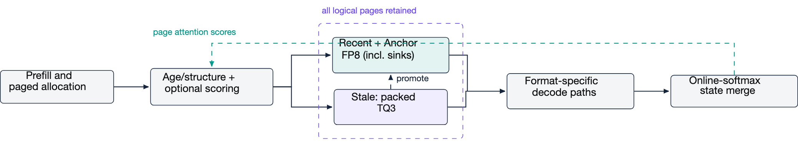

Why it matters왜 중요한가
KV compression usually forces a bad trade: quantize everything uniformly and spend equal bits on unequal tokens, or evict the unimportant tokens and be wrong when attention later moves back to them.
KV 압축은 보통 나쁜 거래를 강요한다. 전부 균일하게 양자화해 중요도가 다른 토큰에 같은 비트를 쓰거나, 덜 중요한 토큰을 축출했다가 나중에 어텐션이 그쪽으로 돌아오면 틀리거나.
Minima-KV takes the third option and makes it a runtime property rather than an algorithm: demotion replaces deletion. A page that ages out of the recent window does not disappear — it is re-encoded at three bits and stays addressable, and if attention returns to it the controller can promote it back to FP8. That closes the failure mode of eviction methods (H2O, SnapKV, Scissorhands) without paying uniform-quantization's flat bit cost, and it does so inside a production paged runtime with an ownership protocol, CUDA-graph-compatible decode, and prefix-cache reuse — the parts that usually break when a compression paper meets a real server.
Minima-KV는 세 번째 선택지를 택하되 이를 알고리즘이 아니라 런타임의 성질로 만든다. 삭제 대신 강등이다. recent 윈도에서 밀려난 페이지는 사라지지 않는다. 3비트로 재부호화되어 계속 주소지정 가능한 상태로 남고, 어텐션이 다시 그쪽을 찾으면 컨트롤러가 FP8로 승격시킬 수 있다. 이로써 축출 계열(H2O, SnapKV, Scissorhands)의 실패 모드를 닫으면서도 균일 양자화의 평평한 비트 비용을 치르지 않는다. 게다가 이 모든 것을 소유권 프로토콜, CUDA 그래프 호환 디코드, prefix 캐시 재사용을 갖춘 프로덕션 페이지 런타임 안에서 한다 — 압축 논문이 실제 서버를 만났을 때 대개 부러지는 바로 그 부분들이다.

By the numbers핵심 숫자
Quality against its dense controldense 대조군 대비 품질
| Evaluation | n | Dense control | Minima-KV | Delta |
|---|---|---|---|---|
| RULER NIAH 4K | 256 | 97.27% | 93.75% | −0.9 pp |
| RULER NIAH 8K | 256 | 99.80% | 100.00% | +0.20 pp |
| RULER NIAH 16K | 256 | 100.00% | 100.00% | 0.00 pp |
| LongBench v2 (cap 16K) | 503 | 190 (37.77%) | 186 (36.98%) | −0.80 pp |
| LongBench v2 32K | 503 | paired delta record only | −0.60 pp | |
| LongBench v2 64K | 503 | paired delta record only | −0.40 pp | |
The idea in four moves네 수로 보는 아이디어
Recent · Anchor · Stale
Each physical page carries a state z ∈ {R, A, S}. Recent is the FP8 sliding window that protects local reasoning. Anchor is a protected FP8 budget for old-but-globally-important pages: system instructions, attention sinks, retrieved evidence, document and code structure. Stale is everything else, old and unprotected, packed at three bits.
각 물리 페이지는 상태 z ∈ {R, A, S}를 갖는다. Recent는 국소 추론을 보호하는 FP8 슬라이딩 윈도다. Anchor는 오래됐지만 전역적으로 중요한 페이지를 위한 보호된 FP8 예산이다 — 시스템 지시문, 어텐션 싱크, 검색된 근거, 문서·코드 구조. Stale은 그 나머지, 즉 오래됐고 보호되지 않은 페이지로 3비트로 패킹된다.
TQ3: rotated 3-bit, unpacked in the kernel
Stale pages use a three-bit rotated scalar quantizer in the spirit of TurboQuant, with packed codes, scales and metadata stored beside the page. Critically the decode kernel unpacks while loading tiles, so there is no cache-sized dequantization buffer — the compression is physical, not a view over a dense copy.
Stale 페이지는 TurboQuant 계열의 회전(rotated) 3비트 스칼라 양자화기를 쓰고, 패킹된 코드·스케일·메타데이터를 페이지 옆에 둔다. 결정적으로 디코드 커널이 타일을 로드하면서 언패킹하므로 캐시 크기의 역양자화 버퍼가 없다. 압축이 dense 사본 위의 뷰가 아니라 물리적으로 실재한다는 뜻이다.
Two formats, one softmax
FP8 and TQ3 partitions are decoded by separate kernels that each emit online-softmax state (mj, ℓj, Ōj). These merge under one global normalization, which is what lets page attention mass from different physical formats be compared on the same scale — and lets the runtime drop the dense shadow entirely.
FP8과 TQ3 파티션은 각각 별도 커널이 디코드하며 online-softmax 상태 (mj, ℓj, Ōj)를 내놓는다. 이들이 하나의 전역 정규화 아래에서 병합되고, 덕분에 서로 다른 물리 포맷의 페이지 어텐션 질량을 같은 척도에서 비교할 수 있으며 런타임이 dense shadow를 완전히 없앨 수 있다.
Copy before publish, release last
Every tier change follows an ownership protocol: allocate and fill the destination format, record conversion completion, atomically publish the new format tag and physical id, and only then release the source — after all readers and the conversion event have cleared. A page returns to the free list only when its last request, cache, reader and conversion reference is gone. This is what makes "no live page is ever lost" a runtime guarantee rather than a policy claim.
모든 계층 전환은 소유권 프로토콜을 따른다. 목적지 포맷을 할당·채우고, 변환 완료를 기록하고, 새 포맷 태그와 물리 id를 원자적으로 게시한 뒤, 그다음에야 원본을 해제한다 — 모든 리더와 변환 이벤트가 정리된 후에. 페이지는 마지막 요청·캐시·리더·변환 참조가 모두 사라진 뒤에만 free list로 돌아간다. "살아 있는 페이지는 절대 잃지 않는다"가 정책 주장이 아니라 런타임 보장이 되는 지점이다.
How it works어떻게 작동하나
- Append in FP8.FP8로 추가한다. New KV goes into a request-owned Recent page at 8 bits; no compression work is spent on the pages most likely to be read heavily over the next few steps. 새 KV는 요청이 소유한 Recent 페이지에 8비트로 들어간다. 앞으로 몇 스텝 동안 가장 많이 읽힐 페이지에는 압축 비용을 쓰지 않는다.
- Score pages on a common scale.공통 척도로 페이지를 채점한다. Optionally, per-page attention mass is normalized by the same global softmax used for the output, then smoothed with an EWMA — so scores from FP8 and TQ3 partitions are comparable. (This mechanism is off in every profile they report.) 선택적으로, 페이지별 어텐션 질량을 출력과 동일한 global softmax로 정규화한 뒤 EWMA로 평활한다. 그래야 FP8 파티션과 TQ3 파티션의 점수를 비교할 수 있다. (다만 보고된 모든 프로파일에서 이 기능은 꺼져 있다.)
- Retier at checkpoints.체크포인트에서 계층을 재배치한다. Eligible old pages are ranked to fill the Anchor budget; those that fall out of it are demoted to TQ3 rather than dropped. A Stale page that re-enters the protected budget is materialized and promoted back into a freshly allocated FP8 page. 자격 있는 오래된 페이지들을 순위 매겨 Anchor 예산을 채우고, 거기서 밀려난 페이지는 버려지는 대신 TQ3로 강등된다. 다시 보호 예산에 들어온 Stale 페이지는 materialize되어 새로 할당된 FP8 페이지로 승격된다.
- Decode both formats, merge once.두 포맷을 디코드하고 한 번에 병합한다. Format-specific kernels run under CUDA-graph replay and their partial outputs are combined in a single stable global-softmax merge — 16/16 attention layers routed with zero request-layer fallbacks in the reported canary. 포맷별 커널이 CUDA 그래프 리플레이 아래에서 돌고, 부분 출력들이 하나의 안정적인 global-softmax 병합으로 합쳐진다. 보고된 카나리에서 16/16 어텐션 레이어가 라우팅되었고 요청-레이어 폴백은 0이었다.
- Reuse warm prefixes.warm prefix를 재사용한다. Only immutable full pages may bind to a prefix hash, so the compressed cache also serves prefix reuse: a separate warm-prefix run reports 4.342× physical KV compression at 1.021× the throughput of dense-FP8 automatic prefix caching, with 32/32 exact outputs. 불변인 완성 페이지만 prefix 해시에 바인딩될 수 있어서, 압축된 캐시가 prefix 재사용도 담당한다. 별도의 warm-prefix 실행은 dense-FP8 자동 prefix 캐싱 대비 처리량 1.021×에서 물리 KV 압축 4.342×, 정확 출력 32/32를 보고한다.
What to take away그래서, 가져갈 것
Demotion is a strictly safer primitive than eviction, and it is cheap: three bits per stale scalar buys back the entire "attention shifted to a token I threw away" failure mode. If you are building a cache policy, the retention/fidelity split is the design axis worth copying from this paper.
강등은 축출보다 엄격히 더 안전한 원시연산이고, 비용도 싸다. stale 스칼라당 3비트로 "버린 토큰으로 어텐션이 옮겨갔다"는 실패 모드 전체를 되산다. 캐시 정책을 설계한다면, 이 논문에서 가져갈 만한 설계 축은 보존/정밀도의 분리다.
The global-softmax merge is the enabling trick. Once partial attention states from different physical formats normalize on one scale, mixed-precision paging stops needing a dense shadow — and the same normalization gives you comparable page scores for free.
global-softmax 병합이 이것을 가능케 하는 트릭이다. 서로 다른 물리 포맷의 부분 어텐션 상태가 하나의 척도에서 정규화되는 순간, 혼합 정밀도 페이징에 dense shadow가 더는 필요 없다. 게다가 같은 정규화가 비교 가능한 페이지 점수까지 덤으로 준다.
Read the claim ledger, not the abstract. This paper separates its evidence into named profiles and states which claims each one does not establish — an evidence-reporting style worth stealing even if you never touch KV caches.
초록이 아니라 claim ledger를 읽어라. 이 논문은 증거를 이름 붙인 프로파일로 분리하고, 각각이 무엇을 뒷받침하지 않는지까지 명시한다. KV 캐시를 평생 안 건드릴 사람에게도 훔칠 만한 증거 보고 방식이다.